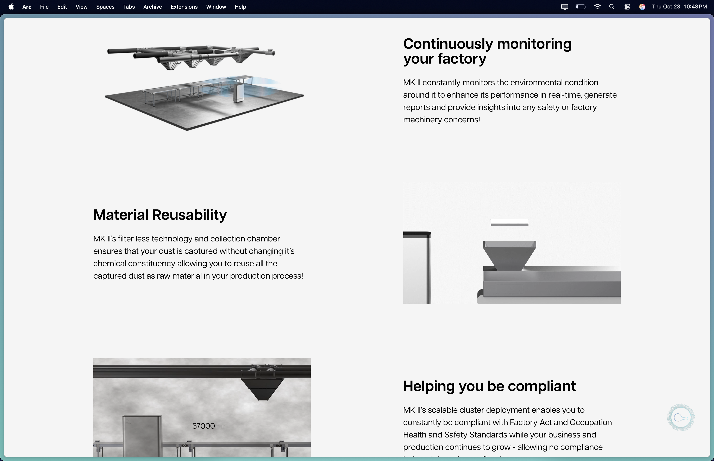
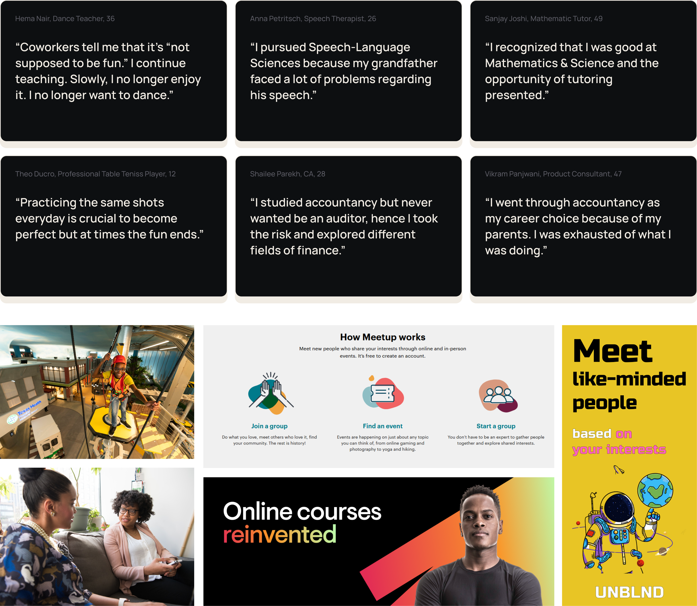
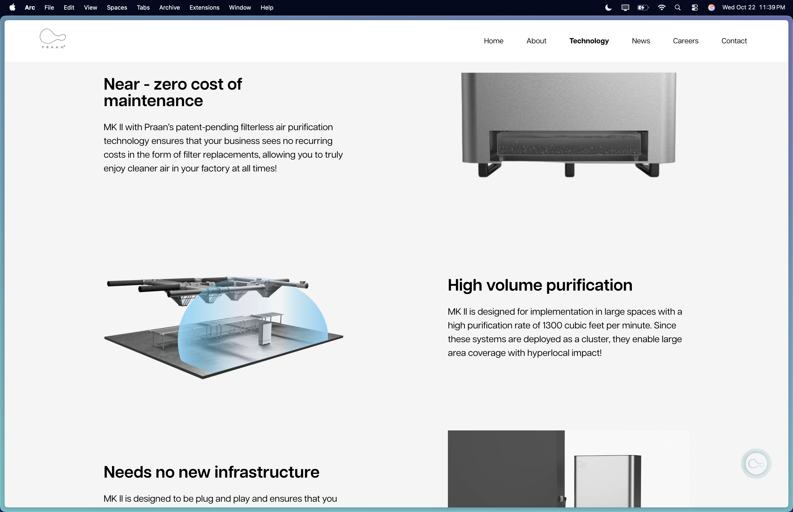
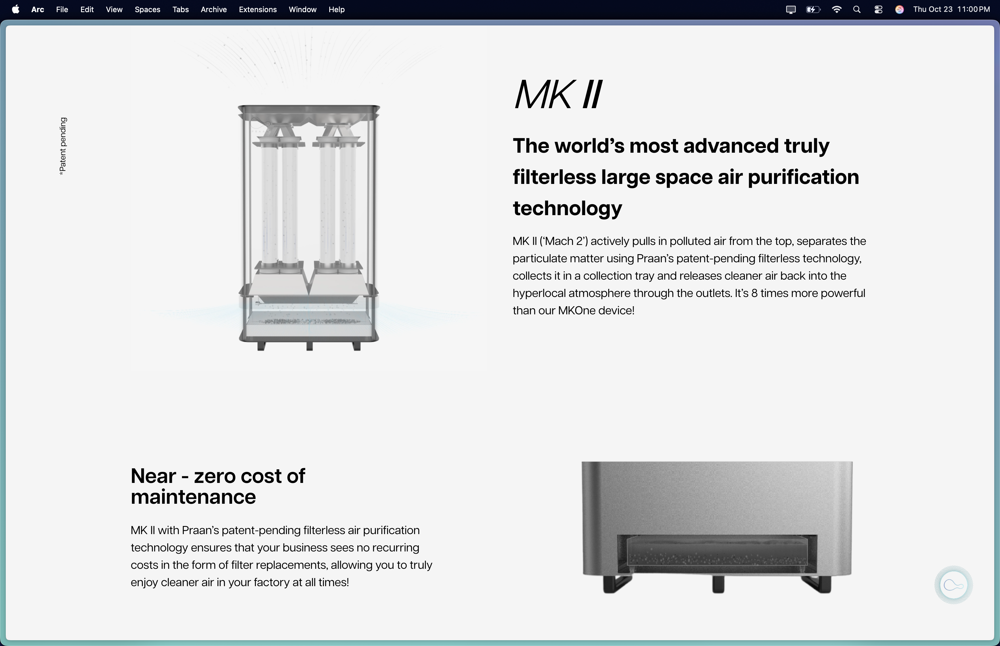
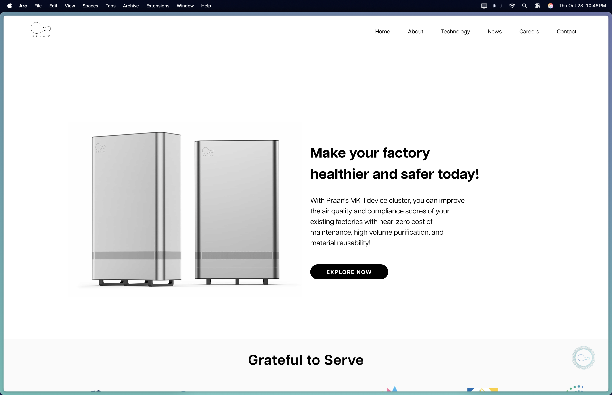
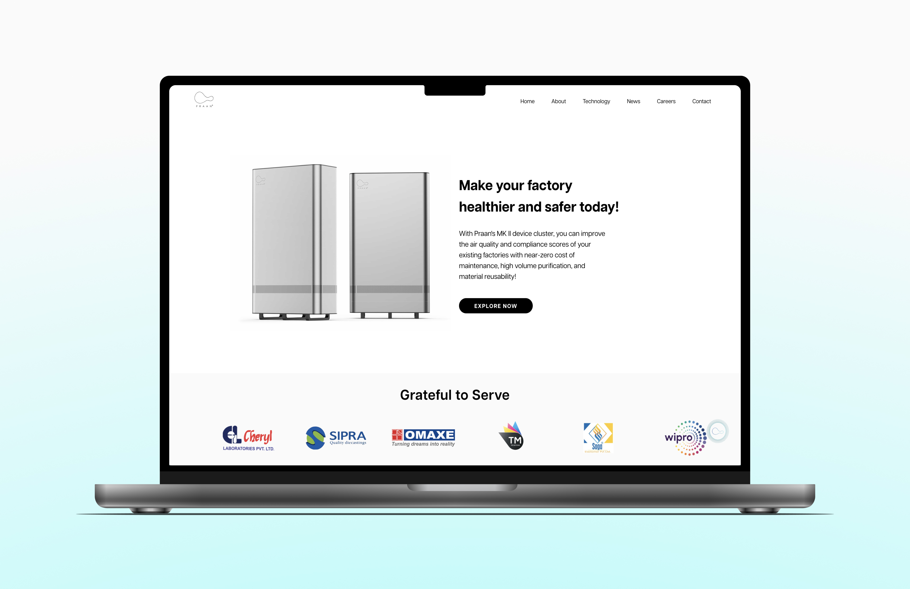
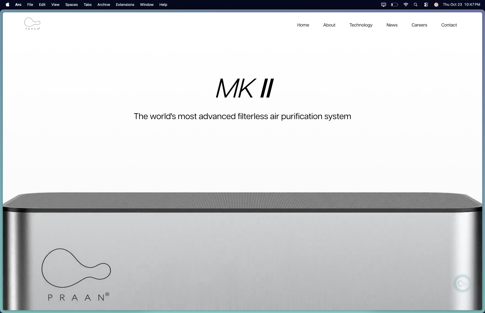
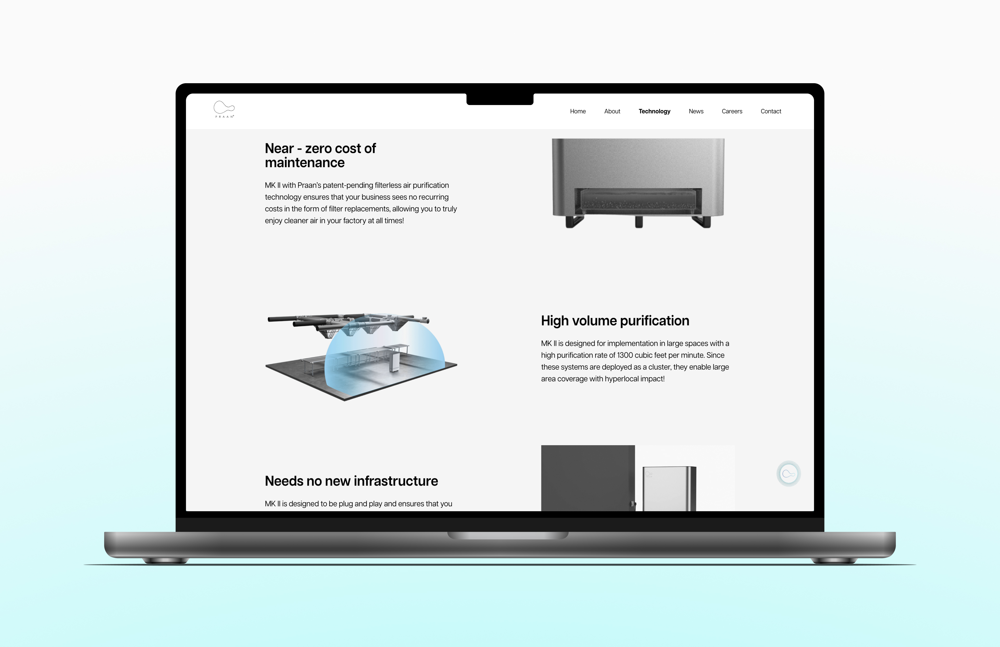

Where It Started
Growing up, my parents encouraged me to explore many hobbies — music, sports, and creative pursuits. Those experiences shaped how I understood learning: through experimentation, collaboration, and shared passion.
Years later in design school, I realized something surprising. Many of us — including myself — had slowly drifted away from the hobbies that once defined us. We were building careers, developing skills, and producing work — but the practices that once sparked curiosity had quietly disappeared. This realization triggered a deeper question: Why do people lose touch with the passions that once shaped who they are?
My thesis began with the ambition to explore how design could help people reconnect with their passions. Photography became the starting point — a hobby I had practiced for years and deeply understood.

[ Caption: where this was taken, or what it represents about how you see ]
The Problem
Today, learning a hobby is easier than ever — yet sustaining passion has become harder. People can access thousands of tutorials, courses, and communities online. But these resources often fail to support how passion actually develops over time.
From my early observations, three patterns emerged:
1 — Passion fades when practice becomes monotonous.
“At first I loved practicing every evening. But after months of repeating the same scales, it started to feel bored. I didn’t stop loving music, I listen to it more often than I play”
2 — Learning platforms overwhelm beginners.
“I saved hundreds of recipes online, but every time I opened them I felt overwhelmed about where to begin. Eventually I just went back to making the same three dishes.”
3 — Passion is fun, but learning isn't always rewarding.
“I watched dozens of tutorials on aperture and ISO, but when I finally went out to shoot, I still didn’t know what to actually look for. It felt like I had learned the settings, but couldn't convert it into results.”

Market and user research revealed a clear gap between discovering hobbies and sustaining them. People need structured, guided, and socially supported learning that fits into everyday life.
"The real problem was the lack of an experience that sustains motivation and curiosity over time."
Insight derived through research, existing solutions, and interviews.Research & Insight
[ Brief overview of research approach — who you spoke to, what you were trying to understand, how long. One paragraph max. ]
Hobbies evolves through phases, not a single moment
Design implication:Learning systems should support an evolving journey rather than a fixed curriculum. This insight led to structuring the experience around progressive missions that guide users through stages of exploration and growth.
Motivation depends on visible progress and perspective
Design implication: [ What changed in the design as a direct result of this finding? ]
[ Research finding 3 — the expert vs. beginner mental model gap, or another key finding ]
Design implication: [ What did this mean for the structure or content of the app? ]


[ Caption: what these artifacts show and the single most important thing they revealed ]
Constraints
[ Pick the 1–2 most interesting constraints and explain how they directly shaped a design decision. The "learning requires doing" constraint is the core one — how did this force a structural decision about how lessons are designed? ]
What Didn't Work
[ Name the abandoned direction — e.g. "Course-based linear curriculum" ]
[ What was the idea — why did the research seem to point here? What did you prototype or sketch? ]

[ Caption: what this direction was and why it was abandoned ]
Key Decisions
- [ Option A ]
- [ Option B ]
- [ Option C ]
- [ Chosen approach ]
- [ What this enabled ]
- [ What it sacrificed ]
- [ Option A ]
- [ Option B ]
- [ Option C ]
- [ Chosen approach ]
- [ What this enabled ]
- [ What it sacrificed ]
- [ Option A ]
- [ Option B ]
- [ Option C ]
- [ Chosen approach ]
- [ What this enabled ]
- [ What it sacrificed ]
Final Design
[ One paragraph describing the final experience from a user's perspective — not a feature list. What is it like to open Percept for the first time? What does the app ask you to do? What happens after your first lesson? ]

[ Caption: what this screen communicates and the decision behind it ]
[ Caption: what changed between these two versions and why ]

[ Caption: the three moments of a Percept lesson — learn, shoot, reflect ]

If We'd Shipped
[ What would the first 90 days of Percept data look like if it shipped? What would tell you the core learning loop was working? What would signal it was broken? ]
[ The harder question: how would you know someone actually got better at photography — not just better at using the app? What qualitative signal would you look for? This is where you show the depth behind the product thinking. ]
Reflection
[ Your honest reflection on what held up — a design decision you're proud of, the research approach, something about the visual language. Be specific, not generic. ]
[ One specific thing — ideally connected to validation. e.g. "I'd have run 3 sessions with beginner photographers before finalising the lesson structure, because the progression I designed assumes a learning curve I never validated with real users." ]